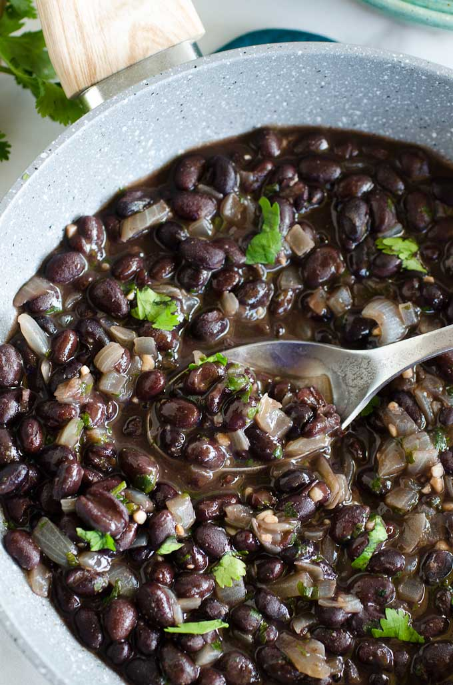

Mexican Cuisine
Mexican Black Beans
Smoky, creamy black beans simmered with Mexican-inspired spices, garlic, onion, and lime.

Instructions
- Heat the oil in a small saucepan over medium heat.
- Add the onion and jalapeño and cook for 3–4 minutes, until softened.
- Add the garlic and cook for about 30 seconds.
- Add the cumin, chili powder, smoked paprika, oregano, coriander, onion powder, cayenne, salt, and black pepper. Stir and toast the spices for about 30 seconds.
- Add the black beans and ⅓ cup chicken broth or water. Stir well and bring to a gentle simmer.
- Reduce the heat to medium-low and simmer uncovered for 10–12 minutes, stirring occasionally.
- Mash about ¼ of the beans with the back of a spoon or potato masher, then stir them back into the pot.
- Simmer for another 3–5 minutes, until the liquid has thickened and the beans are creamy. Add a splash of broth or water if they become too thick.
- Remove from the heat and stir in 1½ teaspoons lime juice. Taste and add the remaining lime juice if you want more brightness.
- Stir in the cilantro, if using, and adjust the salt to taste.